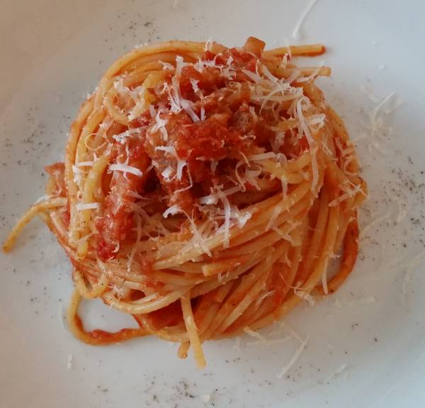

Bucatini all'Amatriciana

Ingredienti per circa 6 persone
- 500g. di spaghetti
- 150g. di guanciale
- 400g. di pomodori Pelati – Mutti
- 50g. di pecorino romano
- 3 Peperoncini rosso secco
- Olio EVO q.b.
- Sale integrale q.b.
Tempo di preparazione: 30 minuti
Preparazione:
- Iniziate facendo cuocere in abbondante acqua salata gli spaghetti.
- Nel frattempo togliete la cotenna al guanciale.
- Quindi tagliatelo a dadini e fatelo rosolare in una padella con un pochissimo olio EVO, io ho usato un
saltapasta, fino a quando il grasso sarà diventato trasparente e la carne dorata. Non c’è bisogno di
aggiungere troppo olio, vedrete che appena il guanciale si scalderà la padella si ungerà con il grasso
rilasciato.
- Unite i pomodori pelati Mutti ed i peperoncini rossi secchi, sbriciolandoli con le dita, aggiustate di sale e
cuocete a fuoco basso con coperchio chiuso per una ventina di minuti, mescolando di tanto in tanto.
- Quindi scolate la pasta e fatela saltare per qualche minuto nel sugo di pomodoro e guanciale, aggiungendo se
necessario dell’acqua di cottura ed aggiustando di sale o peperoncino se necessario ed in base al gusto
personale.
- Impiattate gli spaghetti alla matriciana e cospargete con una generosa dose di pecorino romano, possibilmente
grattugiato al momento.
- Servite gli spaghetti alla matriciana ben caldi.